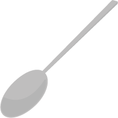
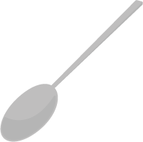
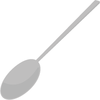
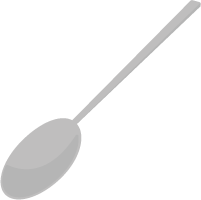

Avez-vous eu
le temps de boire votre
Café
ce matin ?
 



Cet outil vous permet de vous renseigner sur les temps d’affluence de votre ligne pour vous éviter de prendre les transports pendant les heures de pointe.
La SNCF lance à partir du 1er Décembre 2014 un nouveau concept : Les prix des billets seront réduits de moitié en dehors des heures de pointe. Le traffic sera fluidifié, vous ferez des économies et profiterez de votre temps libre sur les temps perdus en trajets surchargés habituellement.